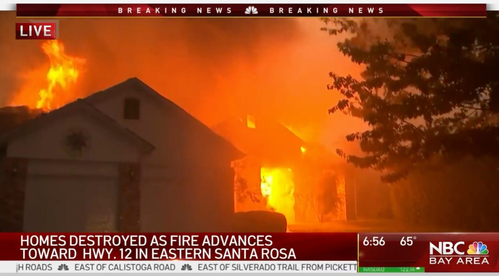
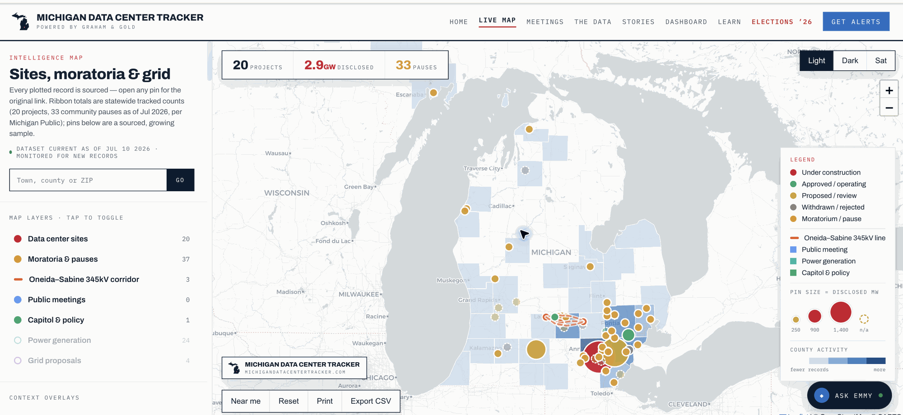
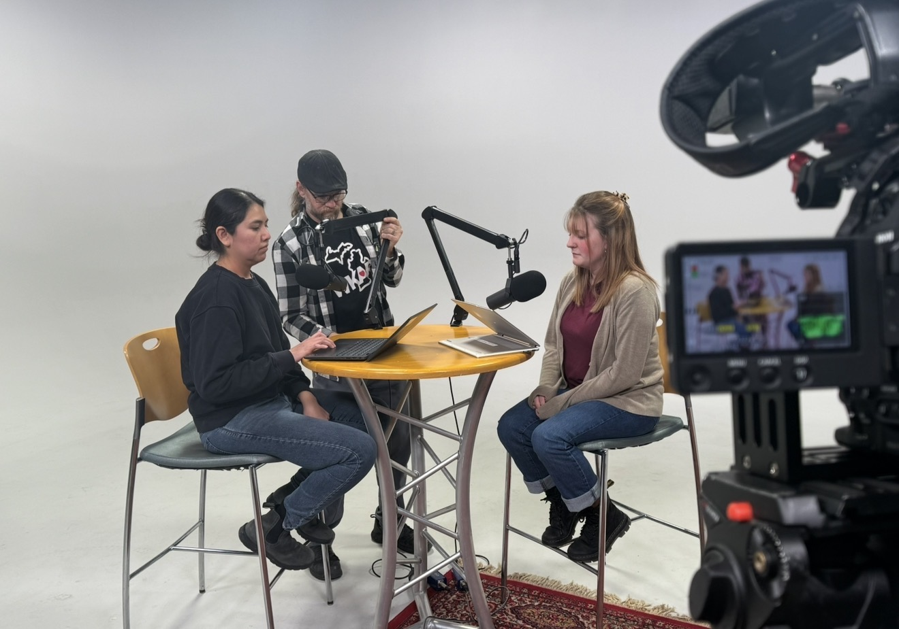
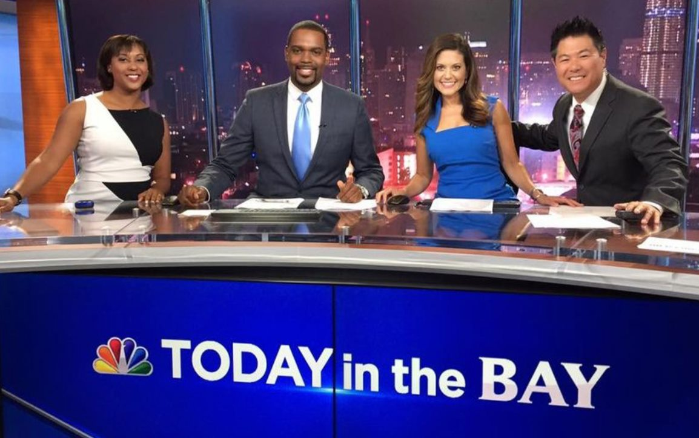

Newsroom executive · Content & editorial product builder
I build content that earns attention and products that last.
I think big picture and work hyperlocal. I’m a journalist, builder, promoter and distributor, always looking for the next big thing worth building.
I’m a newsroom executive and content and editorial product builder with more than two decades across nine newsrooms, from major-market commercial television stations to transforming a public media newsroom. I find the idea people will care about, shape the format, showcase the team behind it and build the distribution and workflow that keep it in front of people: on television, streaming, radio, web, newsletters, social or a live data product.
I think big picture and work hyperlocal. I’m a journalist, builder, promoter and distributor, always looking for the next big thing worth building.
Built The Signal and The Signal+ · Launched Election 2026 · Conceived eightWest in 2009, still on air · Built the independent Michigan Data Center Tracker · Helped launch CBS News Miami 24/7 + Headliners



Andrew Gillfillan
News Director, WKAR
Michigan State University
More than two decades in the field


Breaking news · original products · public media
Selected results
Across the work.
WKAR · The Signal · CBS News Miami
~100%
Growth in daily-average active users on wkar.org during the digital-first strategy I led.
Jan 1, 2025 – Jul 31, 2026 vs. prior 577 days
8.4%
Weighted click rate across 30 original Sunday Signal sends, roughly 7× the media-publisher median.
Feb 1 – Aug 23, 2026 · resends excluded
30+
Employees recruited, hired and onboarded during my tenure at CBS News Miami.
Top-15 market · 100+ employee operation
What actually drives it
I can find something interesting in anything.
Give me a subject I know nothing about and I will come back with the part of it people will actually care about, the person who should tell it, and the reason it matters on a Tuesday. Journalism taught me that. It is not limited to journalism.
The rest is temperament. I am a self-starter who would rather build the first version than write a memo about it, and I keep a roadmap in my head for what the thing should become next.
Numbers
I manage to a number. Analytics, ratings, click rates, product performance. They tell me whether the story landed.
Entrepreneurship
Starting something from nothing is the part of the job I want. Six times now, across four organizations.
Goals
Give a team a target it can see and most of the management problem solves itself.
The conversation
Published is not the finish line. I care whether people are talking about it afterward.
How I work
I like building what doesn’t exist yet.
The instinct is the same everywhere: find the gap, design the thing that fills it, write the workflow that keeps it running, then get it in front of the people it was built for.
Editorial products
Platforms
Operating systems
Audience
AI Innovation Lab · outside WKAR
Independent prototyping · outside WKAR
I build to understand what the work needs next.
Outside my WKAR role, I build scrapers, agenda trackers, public-record pipelines and evidence-first editorial tools on nights and weekends. One pipeline has pulled and automatically cleaned more than 130,000 permits for data journalism. AI accelerates research; source receipts and human judgment stay in charge.
Seventeen years of it
Building has always been the pattern.
Four products, four newsrooms, four different decades of technology. Same instinct each time.
2009
eightWest
A daily lifestyle show at WOOD TV8. I conceived the editorial concept, the production workflow and the brand. It is still on the air.
Show · Workflow · Brand
2022
The 24-hour stream
I oversaw the January 24 launch of the CBS News Miami streaming channel, including staffing models, workflows and Headliners, a stream-only weekly review built in two weeks.
Streaming · Original programming
2026
The Signal
A Sunday briefing for mid-Michigan. Concept, identity, module system and a three-week build, then the operating manual that lets a small newsroom sustain it.
Newsletter · Product · Systems
2026
Election 2026
A dedicated election destination WKAR did not have. Product structure, sections and editorial promise, plus a full-time local politics reporter hired to expand in-depth election coverage.
Strategy · Architecture · Service
Selected work
All case studies →Swipe to browse the case studies →
The Signal
I identified the audience opportunity, conceived the identity and editorial architecture, led a three-week build, then built the contribution system that sustains the Sunday edition and extends into The Signal+.
Newsletter · Product · Systems
Election 2026
I turned the 2026 strategy into a political brand and dedicated destination: product structure, sections, editorial promise and launch plan, supported by a full-time local politics reporter I hired to deepen the coverage.
Strategy · Architecture · Service

Audience & Growth
During the digital transformation the audience roughly doubled and recent months ran about three times the typical-station benchmark. The floor moved, not just the peak.
Analytics · Benchmarks · Method
Building stronger newsrooms
Across NBC Bay Area, CBS News Miami and WKAR: building capacity, developing people and creating systems that let strong journalism endure.
Talent · Hiring · Freelance
The Miami stream
A 24-hour streaming channel whose January 24, 2022 launch I oversaw, and Headliners, the stream-only weekly review I conceptualized and launched in two weeks.
Streaming · Original programming
eightWest
The earliest proof of the pattern is a daily lifestyle show I conceived and launched at WOOD TV8, from concept through workflow and brand. It premiered October 5, 2009, and is still on the air.
Show creation · Workflow · Brand
AI Innovation Lab
Built independently, entirely outside WKAR: scrapers, agenda trackers, a 130,000+ permit pipeline, a live public-record tracker and a private evidence-first desk. AI accelerates research; a named human editor decides what matters.
Scrapers · Public records · Human gate
At WKAR · June 2025 – present
Strategy made operational.
I arrived in June 2025 to a strong newsroom with a digital front door that was not yet doing it justice. Since then I have set direction for two newsletters, a dedicated election destination and a digital-first audience strategy. I built a freelance reporter system to help protect capacity after federal funding cuts, then hired a full-time local politics reporter to expand our in-depth coverage going into election season.
Operating changes
Audience strategy, editorial standards, talent & capacity, product & distribution.
Editorial products
The Signal, The Signal+ and Election 2026 - all launched inside one year.
Audience · growth that held
The floor moved.
WKAR had a strong newsroom and an underserved digital front door. I led a digital-first strategy built around deeper reporting, audience data, search and stronger distribution. During that transformation the audience did not just spike, it settled at a materially higher baseline.
142,739
Peak month · Aug 2025
46,967
Previous high · Mar 2025
≈ 3×
vs. typical-station benchmark
Monthly active users · wkar.org
Jan – Nov 2025Google Analytics via NPR Studio / Looker Studio, monthly active users. The August 2025 peak reflects a sustained news cycle; the honest headline is the plateau underneath it.
People
The newsroom is the product.
Every number on this site traces back to who was hired, what they were coached to do and whether the operation gave them room to lead. I know how to help the people I lead become leaders themselves, and to build around the strengths that make their work distinctive.
30+
Recruited, hired and onboarded at CBS News Miami.
100+
Employee operation I helped oversee in a top-15 market.
MSU
Capitol News Service students reporting inside WKAR coverage, and on our broadcasts as story experts.
Point of view
Everyone and everything has a story.
My job is to make someone a hundred miles away care about it. That means breaking something complicated down to what it actually means for a person, then telling it differently on each platform so it lands where they already are.
All six principles →
The person behind it
A Michigan kid who never stopped chasing weather and stories.
I grew up on a lake in West Michigan, obsessed with weather, and started a neighborhood newspaper on my mom’s computer. Helping her through a liver transplant taught me what impact actually means. A year on the road afterward, twenty states with an elderly golden retriever, taught me how people really consume media when they are not in a focus group.
Read the whole story →